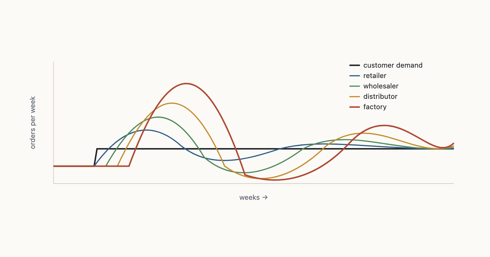
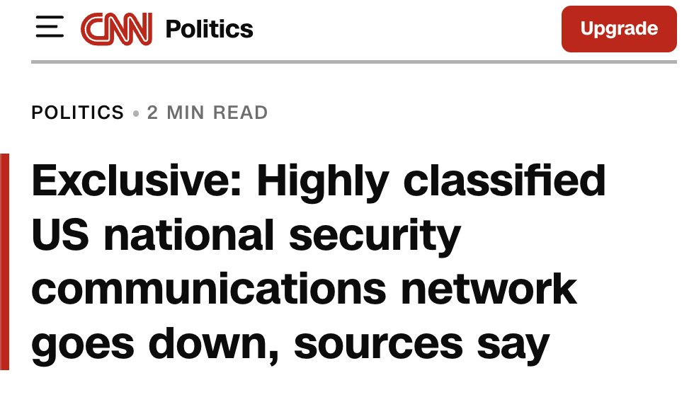
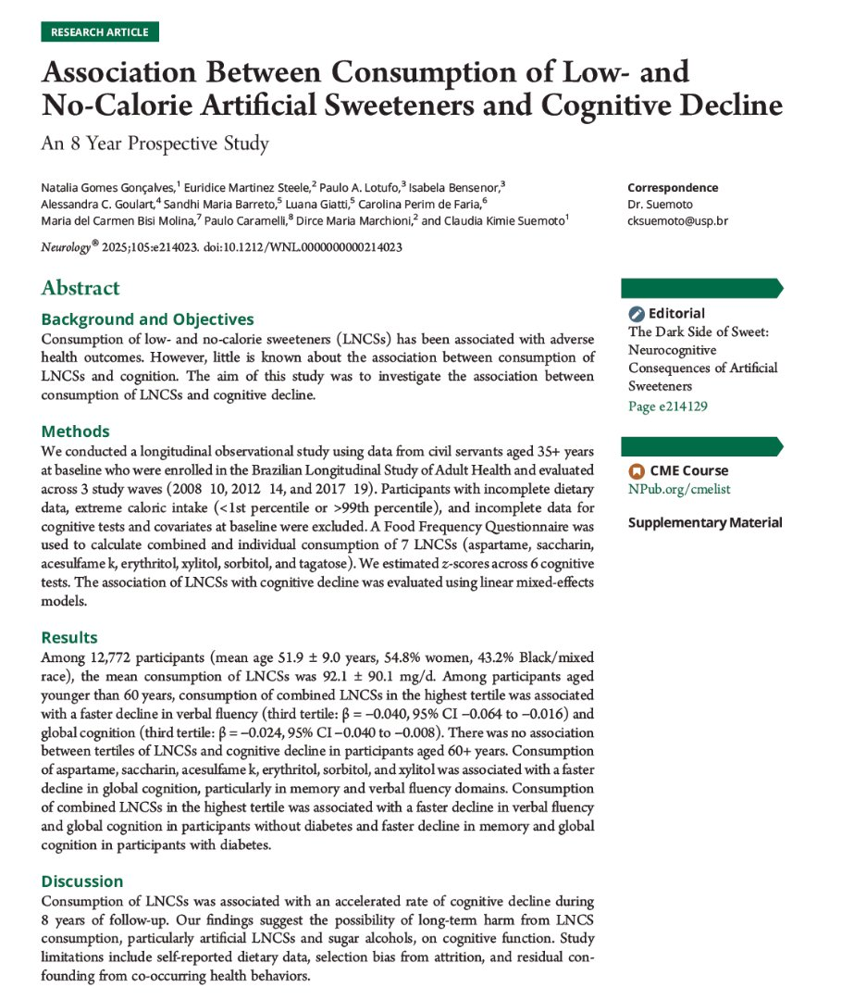
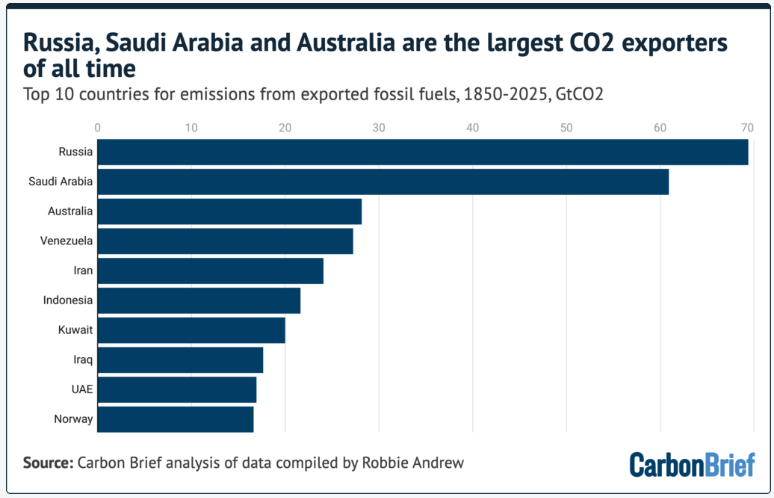

Nvidia da record senza Huang, la settimana dei blackout e il retrogusto amaro dei dolcificanti
Brief di mercoledì 18 novembre 2026 · lista X «Best» · 325 post da 55 account, dalle 07:09 del 17/11 alle 13:23 del 18/11 (ora di Roma)
🍺 Al MIT, dalla fine degli anni '50, si gioca a un gioco di società con quattro giocatori, una fabbrica di birra e una sola regola: non si parla. La domanda dei clienti cambia una volta sola, eppure la filiera impazzisce. Ieri sera Nvidia ha presentato il trimestre più ricco della sua storia. E qualcuno ha tirato fuori la scatola del gioco.
I numeri, prima di tutto. Ricavi record per 115,8 miliardi di dollari nel trimestre, di cui 107,6 dal data center, utile netto di 65,3 miliardi e una guida a 130 miliardi per il prossimo trimestre. +103% su anno; quattro anni fa il trimestre equivalente valeva 5,9 miliardi. Fanno 1,3 miliardi di ricavi al giorno. Titolo +5% e futures sul Nasdaq 100 a +1,3% dopo la chiusura.
Però, però, però. Il pomeriggio era stato un'altra storia: Jensen Huang ha scritto che tornerebbe CEO se il board glielo chiedesse, i dipendenti senior hanno scritto al board che senza di lui si perderebbe «talento insostituibile», e lui stesso testimonierà al Congresso il 1° dicembre. Poi la SEC ha aperto un'indagine sulle comunicazioni agli investitori e, a conti appena usciti, il presidente del board: «non intendiamo reintegrare Jensen Huang», niente domande sull'argomento. Stamattina presto, secondo Semafor, una «fazione» del board spinge invece per il suo ritorno. Paul Graham l'ha chiusa così:
x.com/paulg/status/2122745936279462274
La lettura più utile l'ha scritta Brad Feld: l'AI gioca al MIT Beer Game, e Nvidia è insieme la fabbrica e la banca. Ha 390 miliardi di impegni d'acquisto verso i fornitori, 118 miliardi di garanzie (105 per un solo campus in Ohio che OpenAI affitterà per 20 anni), 81 miliardi di crediti verso clienti, e intanto ha speso 61 miliardi in buyback da inizio anno. Cassa netta: circa 21 miliardi. Come nelle ferrovie del 1847 o nella fibra del 2001, la domanda era vera; a saltare fu la struttura del capitale. Ne parlavamo, con meno zeri, in (🧩 ff.88.1 Una bolla finanziaria?).

Dall'altra parte del tavolo, Balaji propone di riscrivere i manuali delle business school: buona governance uguale controllo del fondatore con azioni a voto plurimo, e board solo consultivo. Azeem Azhar sul New York Times cambia invece la domanda: e se non ci fosse nessuna bolla? Il boom si pagherebbe con il monte salari dei colletti bianchi americani, 8–10 mila miliardi. Brett Winton (ARK) la chiama «l'errore da 70 mila miliardi» del mercato.
Giovedì Microsoft, venerdì la FAA, lunedì le grandi banche, martedì l'NSA: «another day, another outage». NSA Net, la rete classificata dell'agenzia, è andata giù secondo CNN, mentre Google avverte che «l'era degli attacchi autonomi è arrivata». E Anthony Pompliano nota che molti amici «normali» parlano di prepararsi a un disastro su larga scala.

Attacchi? Tyler Cowen invita a non farsi ingannare dal caso, citando Taleb: il rischio cyber è più alto di prima perché l'attacco con l'AI ha superato la difesa, ma i guasti di Microsoft (12/11), FAA (13/11) e JPMorgan Chase (16/11) non sembrano attacchi diretti. L'ipotesi più probabile, per Ethan Mollick, è una corsa alle patch: i CIO con cui ha parlato sono sfiniti. David Shapiro ci aggiunge la conoscenza «tribale» persa con i licenziamenti di informatici senior di quest'anno. Insomma: l'AI trova i buchi, gli umani (o altre AI) li tappano di corsa, e qualcosa si rompe.
Dall'altro lato, OpenAI ha messo GPT-6 Cyber a caccia di bug: ha trovato con Calif una falla importante in Java, dentro l'iniziativa «Patch the Planet», e ha lanciato Daybreak per difendere le reti NATO. Bitwise, intanto, ci ha già fatto un ETF sulla cyber-difesa AI. Vi ricordate il bug di OpenBSD nascosto per 27 anni (🐉 ff.148.1 Claude Mythos: non per tutti)? Ecco il conto, a rate.
Ieri sera OpenAI ha rilasciato GPT-6.2 Sol e Astra, «molto efficienti in token», secondo Sam Altman. Epoch AI misura Astra a 174 sull'Epoch Capabilities Index, alla pari con Fable 5.2, sopra il trend previsto. Ma sul lavoro vero, quello che fanno loro, nessun modello regge ancora il confronto con gli umani.
Ethan Mollick l'ha provato in anteprima: «molto irregolare e strano», difficile da guidare, ma capace di costruire da zero un ascensore spaziale in Blender e Unity.
x.com/emollick/status/2122755693191287009
Il dettaglio più curioso: chiesto un gioco di spie, Astra l'ha ambientato a «Bellwether Station». Non a caso: i modelli GPT sono da sempre ossessionati da campane e campanili sommersi. Dwarkesh Patel, intanto, lo trova poco meglio di GPT 6 a Blood on the Clocktower. Altri campanili. Per Mollick è la rivincita dei «vibe benchmark»: personalità, perseveranza, gusto nessuno li misura, ma contano.
E il mercato? McKay Wrigley sintetizza: «Astra 6.2 è una buona pubblicità per l'IPO di Anthropic». Che infatti, secondo il WSJ, potrebbe prezzare sopra 80 dollari per azione, oltre la forchetta iniziale di 70–78. Nel prospetto, Amazon, Google e Microsoft sono «insieme investitori, clienti, distributori e concorrenti». Mollick ricorda però che chi non salta da un modello all'altro è probabilmente felice di tutti i rilasci degli ultimi due mesi.
Nel primo episodio della nuova serie di a16z, John Schulman e Mark Chen discutono di AI che si migliora da sola. Chen: «credo che oggi abbiamo costruito stagisti di ricerca AI», bravi su compiti ben delimitati. E l'AGI? «Uno spettro, come la Rivoluzione industriale, non un momento». Lucas Beyer, scettico in partenza, l'ha trovato «estremamente buono». Dwarkesh Patel, dal canto suo, raccoglie le critiche al suo saggio sull'RSI per rispondere.
Dove si vede prima, la ricerca accelerata? Forse in medicina: Isomorphic Labs di Demis Hassabis raccoglie 5 miliardi di dollari, sei mesi dopo i 2 precedenti, in corsa per i primi trial clinici. E nei robot: con Gemini 4 Hydrogen e Antigravity, Google DeepMind insegna compiti a un braccio robotico parlando, mentre Brett Adcock (Figure) chiama il suo Helix 3 «baby AGI».
Rhonda Patrick rilancia uno studio brasiliano: chi consumava più dolcificanti artificiali ha avuto un declino cognitivo più rapido del 63%, circa 1,6 anni di invecchiamento cognitivo in più. Lo studio (Neurology, 12.772 persone, 8 anni) è osservazionale, con questionari alimentari autoriportati, e l'associazione compare sotto i 60 anni, non sopra. Aspartame e soci erano già nella lista delle rinunce (📏 ff.68.2 Sempre più misurati e controllati).

Sempre Patrick: tra il 2000 e il 2018 l'obesità negli adulti USA è salita di quasi 12 punti, ma le calorie dichiarate non sono aumentate. Quindi, perché? (⚽ ff.49.1 Siamo sempre più tondi). David Sinclair collega obesità e infiammazione all'invecchiamento epigenetico accelerato e si lamenta che la ricerca di base sull'invecchiamento resti allo 0,8% del budget NIH.
Buone notizie? Il vaccino contro il morbillo vale, da solo, mezzo punto del reddito USA di quest'anno, 80 miliardi di dollari, e lo studio di Alicia Atwood stima +1,1% di reddito negli adulti vaccinati, per più produttività e non più ore (💉 ff.32.4 Vaccini meglio dello stock market). E per chi corre: Siim Land mette in fila cosa significa ogni fascia di VO2max, da sotto 15 ml/kg/min (fatica a vestirsi) a 26–35 («fuori forma»). Il resto della scala, e quanto vale in anni di vita, l'avevamo visto in (🏃🏼♂️ ff.120.1 Quanto correre per “scappare” alla morte?).
a16z ha passato il pomeriggio a raccontare la Boring Company. Gennaio 2017, Musk chiede quanto serva per liberare il parcheggio davanti a SpaceX e iniziare a scavare. «Due settimane». «Perché due settimane? Iniziamo oggi». Il primo obiettivo era battere Gary, la lumaca di casa, 14 volte più veloce di una talpa meccanica. Oggi il Vegas Loop costa circa 62 milioni di dollari per miglio, contro i 160 di una metrotranvia americana media.
Nello stesso spirito, Brett Winton nota che Starship è atterrata già al secondo volo commerciale (ARK se lo aspettava al sesto) e sembra riutilizzabile in settimane. Palmer Luckey racconta che con i soldi di Oculus ha progettato SLAB, una piattaforma marina (seastead) progettata per durare 1.000 anni. Paul Graham riassume il contrasto: tecnologia in rapido progresso, governo in declino.
Di solito la responsabilità del riscaldamento si attribuisce a chi brucia i combustibili fossili. Carbon Brief ha guardato a chi li estrae ed esporta: Russia, Arabia Saudita e Australia sono i maggiori esportatori di CO2 di sempre, con Norvegia decima.

Intanto, ad Antalya, la COP31 si incaglia sulla prima bozza della «cover decision» e Simon Evans apre le scommesse su quando finirà. Sul fronte geopolitico, nelle stesse ore: la campata principale del ponte di Crimea distrutta da droni e missili ucraini, e oggi la prima stretta di mano a tre tra Trump, Putin e Xi.